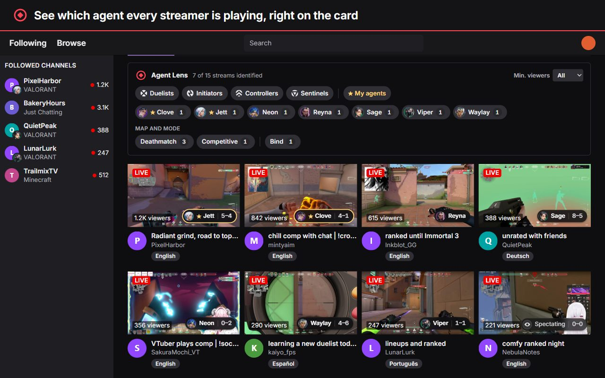
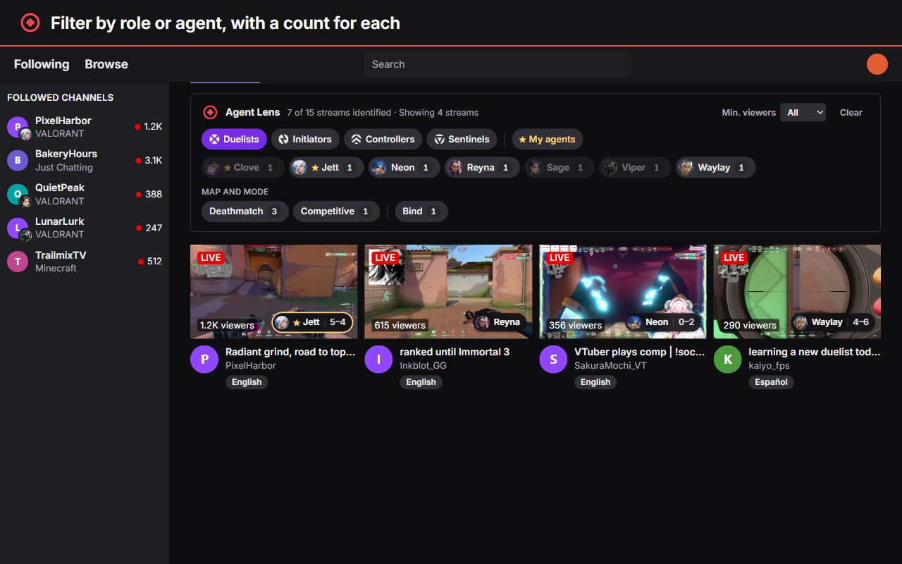
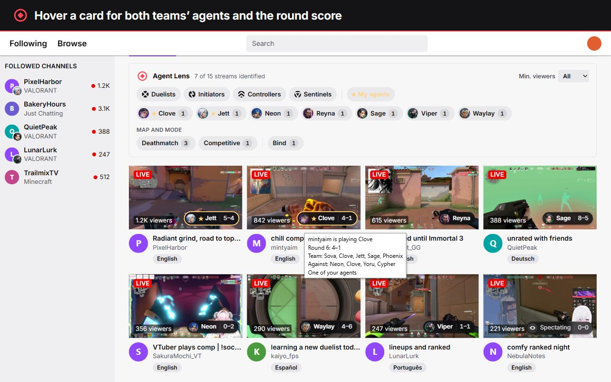
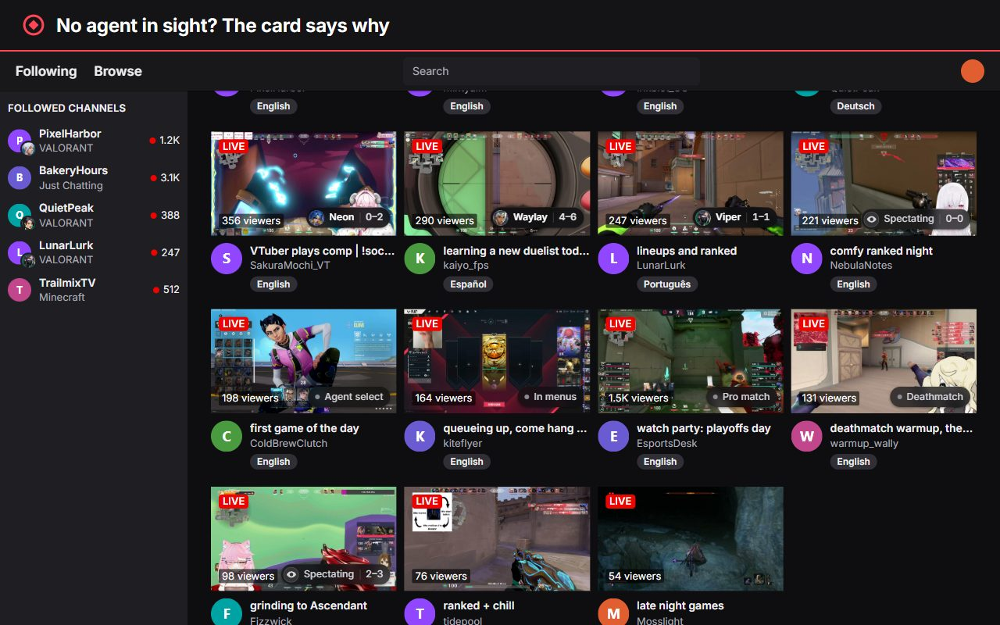
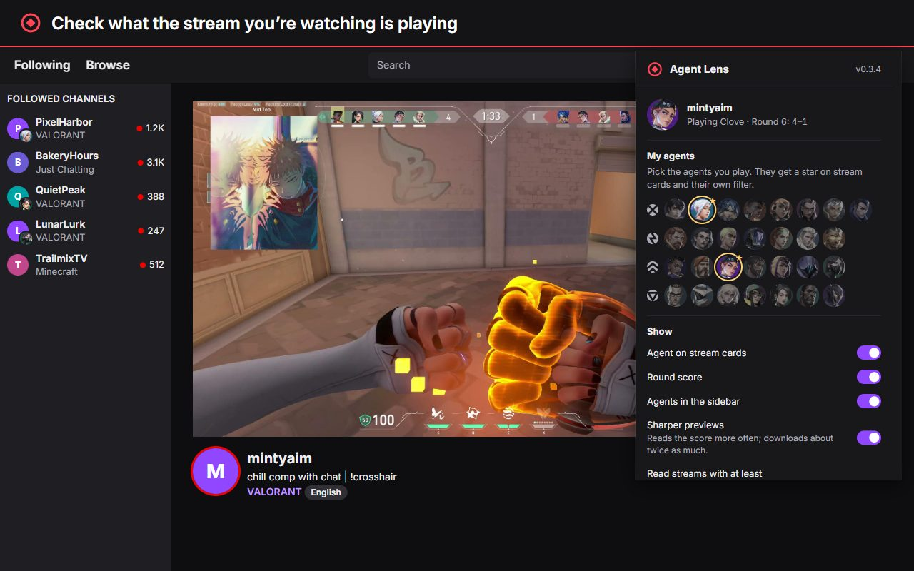

See which agent every streamer is playing
A free Chrome and Edge extension for Twitch's VALORANT directory. Every stream card shows the agent and the round score, and one click shows only the streams on your agent.
Free, no account, no tracking.

What it adds to Twitch
Twitch knows a stream's category and title, but not what's happening in the game. Agent Lens reads that from the stream's own preview picture.
The agent on every card
Plus the round score when it's readable, with match point and overtime highlighted.
Filter by role or agent
Duelists, Initiators, Controllers, Sentinels or any agent, with a live count for each.
Your agents first
Pick the agents you play. Their streams get a star and a one-click filter.
Says why there's no agent
Agent select, in menus, dead, round over, buy phase, deathmatch or a pro match.
Both teams
Hover a card for both teams' agents, the map and the mode.
In your language
English, Nederlands, Deutsch, Español and Português (Brasil).




How it works
Twitch publishes a fresh preview picture of every live stream. Agent Lens looks at it on your own computer.
- On Twitch's VALORANT pages, Agent Lens downloads the public preview picture of each stream you can see, from Twitch's own image server.
- It finds the ability icons at the bottom of the screen and matches them against every agent's icons, using a small WebAssembly program bundled with the extension.
- It shows the agent on the card, then forgets the picture. No account, no servers, no tracking, and it never touches the game or Riot's API.
How well it works
Measured by the developer on 321 live previews from 109 streams, each checked by hand.
When it isn't sure, it says so instead of guessing. Seen a wrong agent? Report it and once confirmed it becomes part of the test set.
Questions
Is it free?
Yes, and it stays free. It's a fan project with no ads, no paid features and no donations.
Does it touch the game or my Riot account?
No. It's a browser extension that only works on twitch.tv. It never talks to the game, the Riot client or Riot's API.
What does it download, and what does it keep?
Only the public preview pictures Twitch already shows for live streams. It keeps your settings and chosen agents in your browser, and forgets what it read when you close the browser. Details are in the privacy policy.
Why does a card sometimes show no agent?
The preview may show a menu, agent select, a death screen or an overlay over the abilities. The card then says what it sees, and the agent appears with a later preview.
What about new agents?
New agents are added in an update once they're released and their icons are available.
Which browsers?
Chrome and Microsoft Edge on desktop.